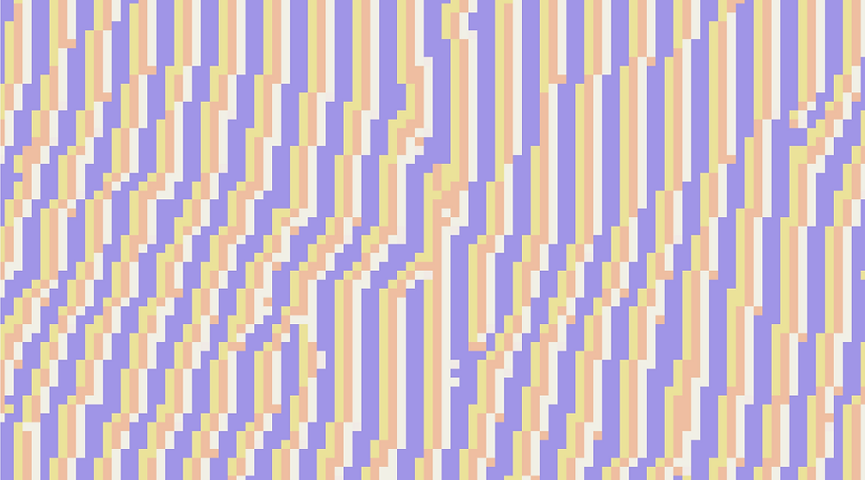

Content Writing, Software Art, Generative Art, Computer Programming, and Digital Illustration
I am a fresh graduate of the School of Creative Media, City University of Hong Kong. My major is Creative Media with a minor in Marketing. My work focuses on art, cultural studies, language, computer science, social and political issues, and lifestyle, presented by various media forms across content writing, computer programming, and digital visuals.
Generative Sawndip is a computer generative language art project creating new writing characters for the Zhuang minority language. Sawndip is a logographic Chinese-derived writing system traditionally used by Tai-speaking people in Southern China and Northern Vietnam including ethnic Zhuang groups. The lack of standardization resulted in many variations of Sawndip characters across regions and even individuals, so this project used computer programming to create my new version of Sawndip characters.
The Journeys is a generative fiction around 8700 words describing the imaginative journey of migrants from different countries to Europe for seeking a better life. The fiction consists of 29 individual stories from the year 2004 to 2032 written from the perspective of migrants. Each story describes the characters and their experience and troubles in the migrating journey. The stories are adapted based on the European migrant crisis in reality.

#CellularAutomataMovement is a sociopolitical-oriented generative art project, which applies cellular automata to discuss online activism on social media.
This digital collage work is a pictogram based on Maya Deren’s Meshes of the Afternoon, which was shown in the exhibition of The Ventriloquists... Thinking Narratively 2020 held at Floating Projects in Jockey Club Creative Arts Centre (JCCAC) in Hong Kong.
Email: stevenzhou.work@gmail.com